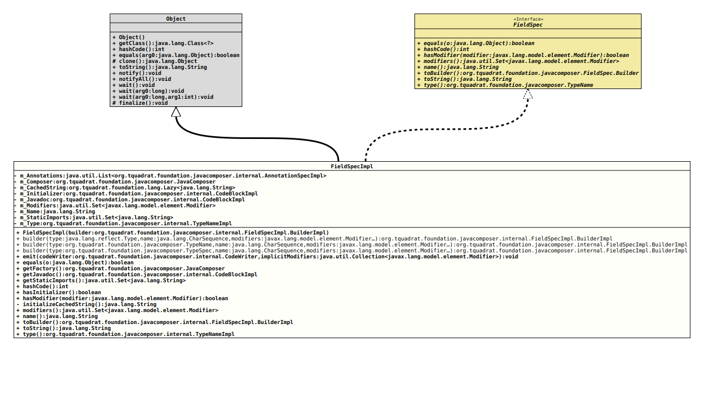

Class FieldSpecImpl
java.lang.Object
org.tquadrat.foundation.javacomposer.internal.FieldSpecImpl
- All Implemented Interfaces:
FieldSpec
@ClassVersion(sourceVersion="$Id: FieldSpecImpl.java 1105 2024-02-28 12:58:46Z tquadrat $")
@API(status=INTERNAL,
since="0.0.5")
public final class FieldSpecImpl
extends Object
implements FieldSpec
The implementation for
FieldSpec.- Author:
- Square,Inc.
- Modified by:
- Thomas Thrien (thomas.thrien@tquadrat.org)
- Version:
- $Id: FieldSpecImpl.java 1105 2024-02-28 12:58:46Z tquadrat $
- Since:
- 0.0.5
- UML Diagram
-

UML Diagram for "org.tquadrat.foundation.javacomposer.internal.FieldSpecImpl"
{kind=link}
-
Nested Class Summary
Nested ClassesNested classes/interfaces inherited from interface org.tquadrat.foundation.javacomposer.FieldSpec
FieldSpec.Builder -
Field Summary
FieldsModifier and TypeFieldDescriptionprivate final List<AnnotationSpecImpl> The annotations for the field.Lazily initialised return value oftoString()for this instance.private final JavaComposerThe reference to the factory.private final CodeBlockImplThe initializer for the field.private final CodeBlockImplThe Javadoc comment for the field.The modifiers for the field.private final StringThe name for the field.The static imports.private final TypeNameImplThe type of the field. -
Constructor Summary
ConstructorsConstructorDescriptionFieldSpecImpl(FieldSpecImpl.BuilderImpl builder) Creates a newFieldSpecImplinstance. -
Method Summary
Modifier and TypeMethodDescriptionstatic final FieldSpecImpl.BuilderImplbuilder(Type type, CharSequence name, Modifier... modifiers) Deprecated, for removal: This API element is subject to removal in a future version.static final FieldSpecImpl.BuilderImplbuilder(TypeName type, CharSequence name, Modifier... modifiers) Deprecated, for removal: This API element is subject to removal in a future version.Got obsolete with the introduction ofJavaComposer.static FieldSpecImpl.BuilderImplbuilder(TypeSpec type, CharSequence name, Modifier... modifiers) Deprecated, for removal: This API element is subject to removal in a future version.Got obsolete with the introduction ofJavaComposer.final voidemit(CodeWriter codeWriter, Collection<Modifier> implicitModifiers) Emits thisFieldSpecinstance to the given code writer.final booleanfinal JavaComposerReturns theJavaComposerfactory.final CodeBlockImplReturns the Javadoc for this field.Returns the static imports for this code block.final inthashCode()final booleanChecks whether the field has an initializer.final booleanhasModifier(Modifier modifier) Checks whether the given modifier was applied to this field.private final StringThe initializer form_CachedString.Returns the modifiers for this field.final Stringname()Returns the name for this field.Returns a builder that is already initialised with the components that built this field.final StringtoString()final TypeNameImpltype()Returns the type of the field.
-
Field Details
-
m_Annotations
The annotations for the field. -
m_Composer
The reference to the factory. -
m_CachedString
Lazily initialised return value oftoString()for this instance. -
m_Initializer
The initializer for the field. -
m_Javadoc
The Javadoc comment for the field. -
m_Modifiers
The modifiers for the field. -
m_Name
The name for the field. -
m_StaticImports
The static imports. -
m_Type
The type of the field.
-
-
Constructor Details
-
FieldSpecImpl
Creates a newFieldSpecImplinstance.- Parameters:
builder- The builder.
-
-
Method Details
-
builder
@Deprecated(since="0.2.0", forRemoval=true) @API(status=DEPRECATED, since="0.0.5") public static final FieldSpecImpl.BuilderImpl builder(Type type, CharSequence name, Modifier... modifiers) Deprecated, for removal: This API element is subject to removal in a future version.Got obsolete with the introduction ofJavaComposer.Creates a builder for an instance ofFieldSpecfrom the given type, name and modifiers.- Parameters:
type- The type of theFieldSpecto build.name- The name for the new field.modifiers- The modifiers.- Returns:
- The new builder.
-
builder
@Deprecated(since="0.2.0", forRemoval=true) @API(status=DEPRECATED, since="0.0.5") public static final FieldSpecImpl.BuilderImpl builder(TypeName type, CharSequence name, Modifier... modifiers) Deprecated, for removal: This API element is subject to removal in a future version.Got obsolete with the introduction ofJavaComposer.Creates a builder for an instance ofFieldSpecfrom the given type, name and modifiers.- Parameters:
type- The type of theFieldSpecto build.name- The name for the new field.modifiers- The modifiers.- Returns:
- The new builder.
-
builder
@Deprecated(since="0.2.0", forRemoval=true) @API(status=DEPRECATED, since="0.0.5") public static FieldSpecImpl.BuilderImpl builder(TypeSpec type, CharSequence name, Modifier... modifiers) Deprecated, for removal: This API element is subject to removal in a future version.Got obsolete with the introduction ofJavaComposer.Creates a builder for an instance ofFieldSpecfrom the given type, name and modifiers.- Parameters:
type- The type of theFieldSpecto build.name- The name for the new field.modifiers- The modifiers.- Returns:
- The new builder.
-
emit
public final void emit(CodeWriter codeWriter, Collection<Modifier> implicitModifiers) throws UncheckedIOException Emits thisFieldSpecinstance to the given code writer.- Parameters:
codeWriter- The code writer.implicitModifiers- The implicit modifiers.- Throws:
UncheckedIOException- A problem occurred when writing to the output target.
-
equals
-
getFactory
Returns theJavaComposerfactory.- Returns:
- The reference to the factory.
-
getJavadoc
Returns the Javadoc for this field.- Returns:
- The Javadoc.
- Since:
- 0.2.0
-
getStaticImports
Returns the static imports for this code block.- Returns:
- The static imports.
-
hashCode
-
hasInitializer
Checks whether the field has an initializer.- Returns:
trueif the field has an initializer,falseotherwise.
-
hasModifier
Checks whether the given modifier was applied to this field.- Specified by:
hasModifierin interfaceFieldSpec- Parameters:
modifier- The modifier.- Returns:
trueif the given modifier has been applied to this field.
-
initializeCachedString
The initializer form_CachedString.- Returns:
- The return value for
toString().
-
modifiers
Returns the modifiers for this field. -
name
Returns the name for this field. -
toBuilder
Returns a builder that is already initialised with the components that built this field. -
toString
-
type
Returns the type of the field.
-
JavaComposer.